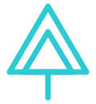

Taiwan Teen Trust（TTT）成立於2024年，由一群對社會充滿熱情的台灣高中生與大學生共同創立。我們相信青年的力量不應該被低估——每一個行動，不論大小，都能為這片土地帶來真實的改變。
透過每年設定的年度主題，我們集結來自設計、影片、研究、行銷、財務等多元專業的成員，針對台灣最迫切的社會議題，發起具體、可見、有影響力的行動方案。
青年不是明天的領袖，而是今天的行動者。
我們把資源和精力放在真實可見的行動上，而非停留於討論和計畫。每個專案都有明確的目標、時程與可量化的成果。
設計師、工程師、研究員、影像創作者、行銷人——我們相信多元的背景與技能，才能打造出真正有影響力的解決方案。
從專案規劃到成果報告，我們對社會大眾保持透明。我們相信信任來自責任感，而責任感來自坦誠分享。
我們不害怕犯錯，因為我們把每次挑戰都視為學習的機會。組織的成長，源自於成員的成長。
由一群在台灣就讀的學生共同發起，以「青年改變社會」為核心信念，正式成立組織並完成第一屆招募。
以台灣快速老齡化問題為核心，發起「青銀交流計畫」，連結青年與獨居長者，建立跨代互動平台。
擴大組織規模，新增設計與影像部門，以氣候行動為主軸，發起校園減碳計畫並舉辦大型公益展覽。
推出全台第一個由青年主導的流浪動物救援資訊平台「Stray Aid Map」，整合收容所、動物醫院與餵食站數據。